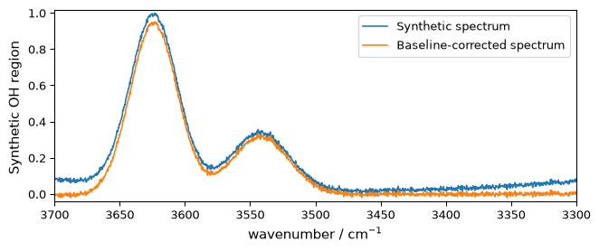
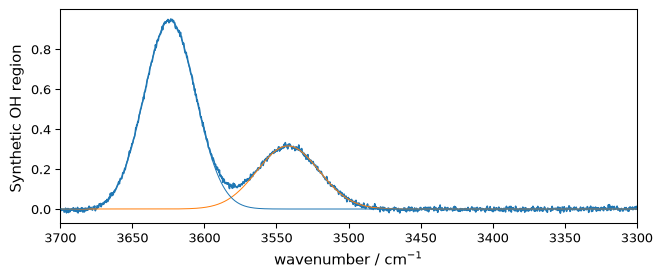
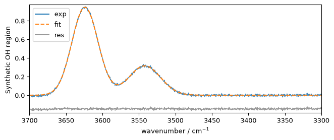

Peak Analysis Workflow
This tutorial shows an end-to-end peak-analysis workflow in SpectroChemPy:
prepare a spectrum,
detect peaks with
find_peaks(),inspect the result through
PeakFindingResultandPeakTable,export the table,
write and validate a fitting script,
fit the spectrum and inspect the resulting
FitResult.
It complements the dedicated tutorials on peak finding and fitting by focusing on the bridge between detection and fitting.
[1]:
from pathlib import Path
from tempfile import TemporaryDirectory
import spectrochempy as scp
Load and prepare a spectrum
We build a small synthetic spectrum with two broad OH-like peaks on top of a gentle baseline and a little Gaussian noise. This keeps the tutorial self-contained while still showing the full workflow on a slightly more realistic profile.
[2]:
prefs = scp.preferences
prefs.figure.figsize = (7, 3)
x = scp.Coord.linspace(3700.0, 3300.0, 1200, title="wavenumber", units="cm^-1")
baseline = scp.polynomial(
x,
offset=0.015,
slope=0.00002,
ampl=1.0,
c_2=1.5e-6,
)
peak_1 = scp.gaussian(x, ampl=0.95, pos=3624.0, width=42.39, normalized=False)
peak_2 = scp.gaussian(x, ampl=0.32, pos=3542.0, width=51.81, normalized=False)
noise = scp.normal(loc=0.0, scale=0.007, size=x.size)
nd_oh = baseline + peak_1 + peak_2 + noise
nd_oh.title = "Synthetic OH region"
nd_oh_corr = scp.basc(
nd_oh,
[3700.0, 3670.0],
[3490.0, 3300.0],
model="polynomial",
order=2,
)
ax = nd_oh.plot(label="Synthetic spectrum")
_ = nd_oh_corr.plot(clear=False, label="Baseline-corrected spectrum")
ax.legend()
[2]:
<matplotlib.legend.Legend at 0x7fb529f9b770>

Detect peaks and inspect the structured result
find_peaks(..., as_result=True) returns a PeakFindingResult instead of the historical (peaks, properties) tuple. The result keeps the detected peak dataset and exposes a stable tabular view through result.table.
[3]:
result = nd_oh_corr.find_peaks(
height=0.05,
distance="20 cm^-1",
prominence=0.1,
width="10 cm^-1",
as_result=True,
)
result
[3]:
PeakFindingResult(n_peaks=2)
[4]:
table = result.table
table
[4]:
PeakTable(n_peaks=2)
PeakTable gives us a dependency-light view of the detected peaks. The raw peak dataset and the raw SciPy-style property dictionary are still available on result, but the table is often a better starting point for inspection, export, and later workflow steps.
[5]:
rows = table.to_dict()
rows[:4]
[5]:
[{'index': 0,
'position': <Quantity(3623.207, '1 / centimeter')>,
'height': 0.9516474870033562,
'peak_height': 0.9513196036845222,
'prominence': 0.970910893493803,
'left_base': <Quantity(3687.656, '1 / centimeter')>,
'right_base': <Quantity(3353.044, '1 / centimeter')>,
'width': <Quantity(42.5858304, '1 / centimeter')>,
'width_height': 0.4658641569376207,
'left_ip': <Quantity(3645.36837, '1 / centimeter')>,
'right_ip': <Quantity(3602.78072, '1 / centimeter')>},
{'index': 1,
'position': <Quantity(3543.822, '1 / centimeter')>,
'height': 0.3325061220675707,
'peak_height': 0.33221067325400544,
'prominence': 0.2297543273568544,
'left_base': <Quantity(3582.569, '1 / centimeter')>,
'right_base': <Quantity(3353.044, '1 / centimeter')>,
'width': <Quantity(37.1886645, '1 / centimeter')>,
'width_height': 0.21733350957557823,
'left_ip': <Quantity(3560.73765, '1 / centimeter')>,
'right_ip': <Quantity(3523.5483, '1 / centimeter')>}]
We can also look at the available table columns:
[6]:
table.columns
[6]:
('index',
'position',
'height',
'peak_height',
'prominence',
'left_base',
'right_base',
'width',
'width_height',
'left_ip',
'right_ip')
Export the peak table
PeakTable.to_csv() writes a simple CSV file without adding any optional dependency such as pandas.
[7]:
with TemporaryDirectory() as tmpdir:
csv_path = Path(tmpdir) / "nh4y-oh-peaks.csv"
_ = table.to_csv(csv_path)
preview = "\n".join(csv_path.read_text(encoding="utf-8").splitlines()[:4])
print(preview)
index,position,height,peak_height,prominence,left_base,right_base,width,width_height,left_ip,right_ip
0,3623.207 cm⁻¹,0.9516474870033562,0.9513196036845222,0.970910893493803,3687.656 cm⁻¹,3353.044 cm⁻¹,42.58583040209892 cm⁻¹,0.4658641569376207,3645.3683737790966 cm⁻¹,3602.7807225929323 cm⁻¹
1,3543.822 cm⁻¹,0.3325061220675707,0.33221067325400544,0.2297543273568544,3582.569 cm⁻¹,3353.044 cm⁻¹,37.18866452805005 cm⁻¹,0.21733350957557823,3560.737645093807 cm⁻¹,3523.5483048413794 cm⁻¹
Select starting candidates for fitting
Peak detection gives geometric candidates. Fitting still requires a modeling decision: which peaks do we want to fit, with which line shape, and with which bounds? Here we keep the two strongest detected peaks and use their positions as initial guesses in a manually written fitting script.
[8]:
selected_table = table.top(2, by="height").sort_by(
"position",
reverse=True,
unit="cm^-1",
)
positions = selected_table.column("position", unit="cm^-1", as_float=True)
heights = selected_table.column("height", as_float=True)
widths = selected_table.column("width", unit="cm^-1", as_float=True)
for position, height, width in zip(positions, heights, widths, strict=False):
print(
f"candidate peak at {position:.2f} cm^-1 "
f"with height {height:.3f} and width {width:.2f} cm^-1"
)
candidate peak at 3623.21 cm^-1 with height 0.952 and width 42.59 cm^-1
candidate peak at 3543.82 cm^-1 with height 0.333 and width 37.19 cm^-1
[9]:
script = f"""
COMMON:
$ gratio: 0.1, 0.0, 1.0
$ gasym: 0.1, 0.0, 1.0
MODEL: LINE_1
shape: asymmetricvoigtmodel
$ ampl: 1.0, 0.0, none
$ pos: {positions[0]:.2f}, {positions[0] - widths[0]:.2f}, {positions[0] + widths[0]:.2f}
> ratio: gratio
> asym: gasym
$ width: {widths[0]:.2f}, {0.5 * widths[0]:.2f}, {2.0 * widths[0]:.2f}
MODEL: LINE_2
shape: asymmetricvoigtmodel
$ ampl: 0.2, 0.0, none
$ pos: {positions[1]:.2f}, {positions[1] - widths[1]:.2f}, {positions[1] + widths[1]:.2f}
> ratio: gratio
> asym: gasym
$ width: {widths[1]:.2f}, {0.5 * widths[1]:.2f}, {2.0 * widths[1]:.2f}
"""
print(script)
COMMON:
$ gratio: 0.1, 0.0, 1.0
$ gasym: 0.1, 0.0, 1.0
MODEL: LINE_1
shape: asymmetricvoigtmodel
$ ampl: 1.0, 0.0, none
$ pos: 3623.21, 3580.62, 3665.79
> ratio: gratio
> asym: gasym
$ width: 42.59, 21.29, 85.17
MODEL: LINE_2
shape: asymmetricvoigtmodel
$ ampl: 0.2, 0.0, none
$ pos: 3543.82, 3506.63, 3581.01
> ratio: gratio
> asym: gasym
$ width: 37.19, 18.59, 74.38
Validate the script before fitting
Optimize.validate_script() lets us check the script before launching the optimization.
[10]:
opt = scp.Optimize(log_level="INFO")
errors = opt.validate_script(script)
errors
[10]:
[]
An empty list means that the script is structurally valid and all referenced models are recognized.
Fit the spectrum and inspect the result
[11]:
opt.script = script
opt.max_iter = 20000
_ = opt.fit(nd_oh_corr)
**************************************************
Result:
**************************************************
COMMON:
$ gratio: 1.0000, 0.0, 1.0
$ gasym: 0.0182, 0.0, 1.0
MODEL: line_1
shape: asymmetricvoigtmodel
$ ampl: 0.9447, 0.0, none
> asym:gasym
$ pos: 3623.9464, 3580.62, 3665.79
> ratio:gratio
$ width: 42.0611, 21.29, 85.17
MODEL: line_2
shape: asymmetricvoigtmodel
$ ampl: 0.3157, 0.0, none
> asym:gasym
$ pos: 3541.9539, 3506.63, 3581.01
> ratio:gratio
$ width: 50.7589, 18.59, 74.38
[12]:
fit_result = opt.result
fit_result
[12]:
FitResult — Optimize
Parameters (8)
Outputs (3)
NDDataset [polynomial_Optimize.inverse_transform] — float64, shape: (u:1, x:1200)
Data
Dimension `u`
Dimension `x`
NDDataset [polynomial_Optimize.components] — float64, shape: (k:2, x:1200)
Data
[1.405e-13 1.59e-13 ... 2.597e-26 2.228e-26]]
Dimension `k`
Dimension `x`
NDDataset [polynomial] — float64, shape: (u:1, x:1200)
2026-07-24 20:44:59+00:00> Binary operation add with `gaussian` has been performed
2026-07-24 20:44:59+00:00> Binary operation add with `gaussian` has been performed
2026-07-24 20:44:59+00:00> Binary operation add with `NDDataset_89694bc4` has been performed
2026-07-24 20:45:00+00:00> Binary operation sub with `polynomial_Baseline.baseline` has been performed
2026-07-24 20:45:01+00:00> Binary operation sub with `polynomial_Optimize.inverse_transform` has been performed
Data
Dimension `u`
Dimension `x`
Diagnostics (17)
FitResult groups fitted outputs and diagnostics. The existing estimator surface (opt.predict(), opt.components, plotting helpers, and so on) remains available, but opt.result is the stable result object for inspection.
fit_result.parameters stores the configuration snapshot of the completed run, not a solved parameter table. It records how the fit was executed (method, dry, autobase, autoampl, and related settings), while the diagnostics and uncertainty surfaces describe the result of that run.
[13]:
components = fit_result.components
{
"run_parameters": {
key: fit_result.parameters[key]
for key in (
"method",
"max_iter",
"dry",
"autobase",
"autoampl",
"amplitude_mode",
)
},
"r_squared": fit_result.diagnostics["r_squared"],
"adjusted_r_squared": fit_result.diagnostics["adjusted_r_squared"],
"rmse": fit_result.diagnostics["rmse"],
"degrees_of_freedom": fit_result.diagnostics["degrees_of_freedom"],
"reduced_chi_square": fit_result.diagnostics["reduced_chi_square"],
"aic": fit_result.diagnostics["aic"],
"bic": fit_result.diagnostics["bic"],
"success": fit_result.diagnostics["success"],
"stderr_shape": None if fit_result.stderr is None else fit_result.stderr.shape,
"correlation_shape": None
if fit_result.correlation is None
else fit_result.correlation.shape,
"confidence_intervals_shape": None
if fit_result.confidence_intervals is None
else fit_result.confidence_intervals.shape,
"covariance_shape": None
if fit_result.covariance is None
else fit_result.covariance.shape,
}
[13]:
{'run_parameters': {'method': 'least_squares',
'max_iter': 20000,
'dry': False,
'autobase': False,
'autoampl': False,
'amplitude_mode': 'height'},
'r_squared': 0.9991293716887428,
'adjusted_r_squared': 0.9991242589385928,
'rmse': 0.00717361450873456,
'degrees_of_freedom': 1192,
'reduced_chi_square': 5.180611924824863e-05,
'aic': -11833.629525945345,
'bic': -11792.908911259137,
'success': True,
'stderr_shape': (8,),
'correlation_shape': (8, 8),
'confidence_intervals_shape': (8, 2),
'covariance_shape': (8, 8)}
The fitted components remain regular datasets, so they can be plotted directly against the corrected spectrum.
[14]:
_ = nd_oh_corr.plot()
ax = components[:].plot(clear=False)
ax.autoscale(enable=True, axis="y")

plot_merit() overlays the corrected spectrum, the fitted profile, and the residuals. As in the fitting tutorial, we use a small residual offset to keep the comparison readable in a notebook, with short legend labels to avoid crowding the compact tutorial figure.
[15]:
_ = opt.plot_merit(
offset=15,
exp_label="exp",
calc_label="fit",
resid_label="res",
legend_loc="upper left",
)

Summary
This workflow now has a clear progression:
find_peaks()detects candidates,PeakFindingResultstores the structured detection output,PeakTableprovides a stable tabular view for inspection and export,Optimize.validate_script()checks the fitting DSL before optimization,FitResultgroups fitted outputs and diagnostics.
This is the current reference workflow when moving from peak detection to peak fitting in SpectroChemPy.